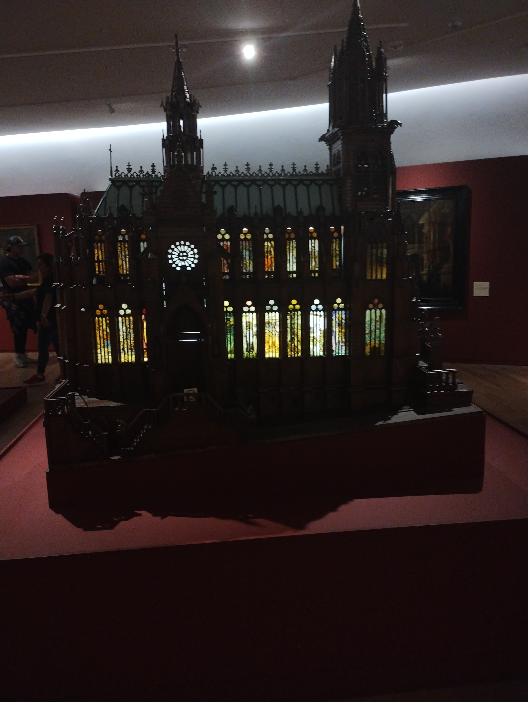
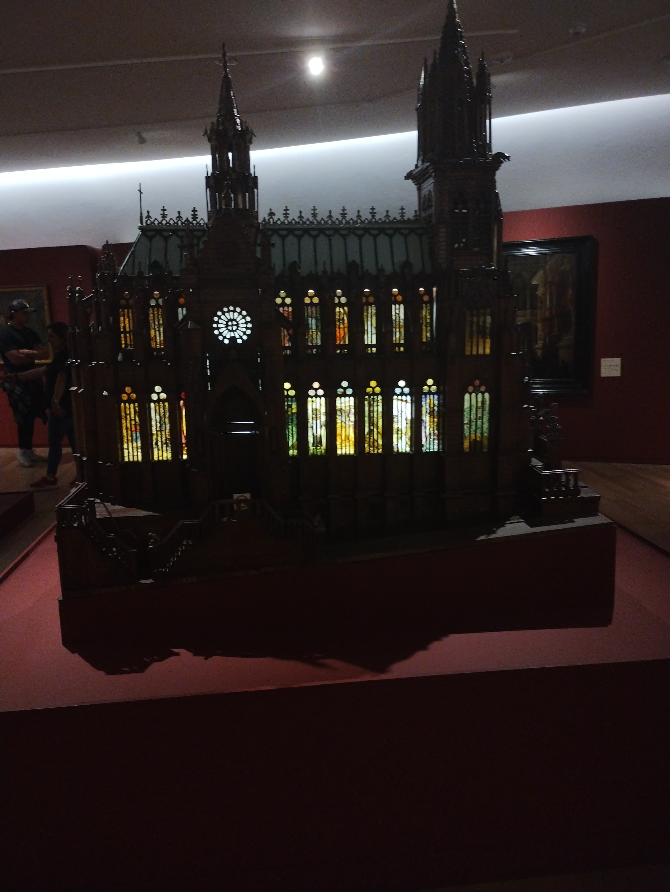

Basílica Saint-Epvre
Situada en el corazón del casco antiguo de Nancy, en Meurthe-et-Moselle, la basílica de Saint-Epvre fue erigida en el siglo XIX sobre los restos de una primera iglesia del siglo XIV. Obra de Prosper Morey, arquitecto galardonado con el Prix de Rome, revela un elegante estilo neogótico.
Bendecido en marzo de 1871, cinco meses después fue embellecido con una flecha en el crucero. En medio de la arquitectura convencional, los visitantes serán seducidos por las decenas de vidrieras hechas en Austria, así como por la carpintería de Baviera. Además, hay magníficos altares de finales del siglo XIX, como el dedicado a Nuestra Señora del Perpetuo Socorro. Este último fue ofrecido por el emperador Franz Joseph y su esposa, Sissi.
 
